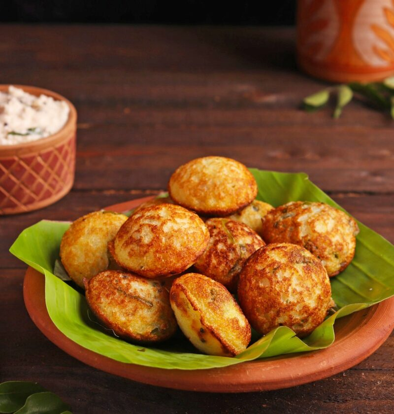

Instant Rava Appe

Description
Instant Rava Appe, also known as Poddu and Paniyaram is a delightful South-Indian snack typically served with chai. Appe are golden brown and crisp on the outside, soft on the inside and when served with aromatic chutneys on a platter, one just can't have enough of this mouth-watering delicacy.
Appe are traditionally made out of urad and rice batter which is fermented for hours before using it to make Appe in a special pan with moulds called Appam Patra. However, this Instant Rava Appe recipe will let you make this dish in a jiffy and in a hassle-free manner.
Ingredients
- ½ cup rava/suji/ semolina
- ½ cup curd/dahi
- ¼ cup water
- Salt to taste
- A pinch of baking soda
- 2 tbsp mustard (sarso) oil
- 1 green chilli, chopped
- 8-10 curry (kadi) leaves
- ¼ tsp mustard (sarson) and cumin (jeera) seeds
- 1 small onion, diced
- 1-inch ginger, grated
- 2-3 tbsp coriander (dhaniya) leaves, chopped
Steps
- Prepare the batter by adding rava (suji/semolina) and curd in a bowl. Whisk the mixture well so that there are no lumps in the batter.
- Next, add water to the batter, mix well and then add salt.
- Then, add baking soda and mix. Keep the batter aside for at least 20 minutes.
- Meanwhile, in a pan add 1 tsp oil, add mustard and cumin seeds when the oil is warm enough. Add green chilies, curry leaves, onion, and ginger.
- Add this to the instant rava appe batter and mix well. Also add coriander leaves and mix.
- Then, in an Appam Patra (Appam patra is a special pan for making appe), add some oil and when the oil is warm, add 1 tbsp of batter.
- Depending on the Appam Patra, be careful while adding the batter as some appam patras or pans might be a little wobbly.
- Cover it and let it cook for 2 minutes on low flame or until the bottom is golden brown. Once the bottom side is golden brown, flip the appe.
- Let the other side of the appe cook for another 1-2 minutes.
- Once cooked, serve hot with South-Indian coconut peanut chutney or tomato chutney.